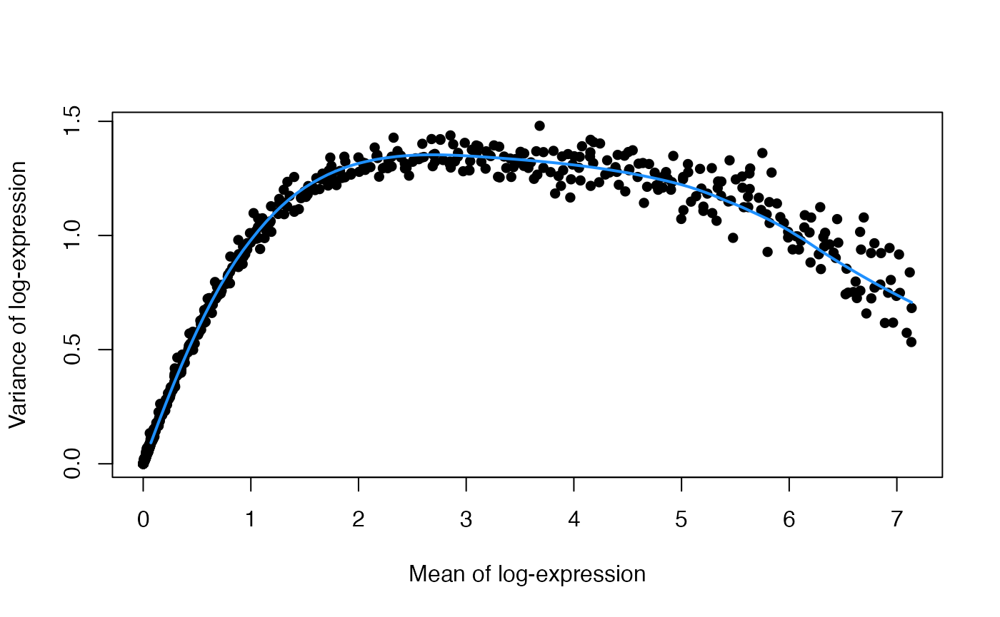

Accessing the Human Cell Atlas datasets
Federico Marini
Institute of Medical Biostatistics, Epidemiology and Informatics (IMBEI), Mainzmarinif@uni-mainz.de
23 June 2020
Source:vignettes/hcadata.Rmd
hcadata.RmdCompiled date: 2020-06-23
Last edited: 2019-05-24
License: MIT + file LICENSE
Introducing the HCAData package
The HCAData package allows a direct access to the dataset generated by the Human Cell Atlas project for further processing in R and Bioconductor. It does so by providing the datasets as SingleCellExperiment objects, i.e. a format which is both efficient and very widely adopted throughout many existing Bioconductor workflows.
The datasets are otherwise available in other formats (also as raw data) at this link: http://preview.data.humancellatlas.org/.
Installing HCAData
The HCAData package can be installed in the conventional way via BiocManager.
if (!requireNamespace("BiocManager", quietly = TRUE)) install.packages("BiocManager") BiocManager::install("HCAData")
This package makes extensive use of the HDF5Array package to avoid loading the entire data set in memory. Instead, it stores the counts on disk as a HDF5 file, and loads subsets of the data into memory upon request.
Loading HCAData and the Human Cell Atlas data
We use the HCAData function to download the relevant files from Bioconductor’s ExperimentHub web resource. If no argument is provided, a list of the available datasets is returned, specifying which name to enter as dataset parameter when calling HCAData.
HCAData()
The list of relevant files includes the HDF5 file containing the counts, as well as the metadata on the rows (genes) and columns (cells).
The output is a single SingleCellExperiment object from the SingleCellExperiment package.
Being based on ExperimentHub, the data related to this package can be accessed and queried directly using the package name. Retrieval is then as easy as using their ExperimentHub accession numbers (for the single components of each set), or by using the convenience function provided in this package.
suppressPackageStartupMessages({ library("ExperimentHub") library("SingleCellExperiment") }) eh <- ExperimentHub() query(eh, "HCAData") #> ExperimentHub with 6 records #> # snapshotDate(): 2020-06-11 #> # $dataprovider: Human Cell Atlas #> # $species: Homo sapiens #> # $rdataclass: character #> # additional mcols(): taxonomyid, genome, description, #> # coordinate_1_based, maintainer, rdatadateadded, preparerclass, tags, #> # rdatapath, sourceurl, sourcetype #> # retrieve records with, e.g., 'object[["EH2047"]]' #> #> title #> EH2047 | Human Cell Atlas - Census of Immune Cells, Bone marrow, 'dense m... #> EH2048 | Human Cell Atlas - Census of Immune Cells, Bone marrow, sample (... #> EH2049 | Human Cell Atlas - Census of Immune Cells, Bone marrow, gene (ro... #> EH2050 | Human Cell Atlas - Census of Immune Cells, Umbilical cord blood,... #> EH2051 | Human Cell Atlas - Census of Immune Cells, Umbilical cord blood,... #> EH2052 | Human Cell Atlas - Census of Immune Cells, Umbilical cord blood,... # these three are the components to the bone marrow dataset bonemarrow_h5densematrix <- eh[["EH2047"]] bonemarrow_coldata <- eh[["EH2048"]] bonemarrow_rowdata <- eh[["EH2049"]] # and are put together when calling... sce_bonemarrow <- HCAData("ica_bone_marrow") sce_bonemarrow #> class: SingleCellExperiment #> dim: 33694 378000 #> metadata(0): #> assays(1): counts #> rownames(33694): ENSG00000243485 ENSG00000237613 ... ENSG00000277475 #> ENSG00000268674 #> rowData names(2): ID Symbol #> colnames(378000): MantonBM1_HiSeq_1-AAACCTGAGCAGGTCA-1 #> MantonBM1_HiSeq_1-AAACCTGCACACTGCG-1 ... #> MantonBM8_HiSeq_8-TTTGTCATCTGCCAGG-1 #> MantonBM8_HiSeq_8-TTTGTCATCTTGAGAC-1 #> colData names(1): Barcode #> reducedDimNames(0): #> altExpNames(0): # similarly, to access the umbilical cord blood dataset sce_cordblood <- HCAData("ica_cord_blood") sce_cordblood #> class: SingleCellExperiment #> dim: 33694 384000 #> metadata(0): #> assays(1): counts #> rownames(33694): ENSG00000243485 ENSG00000237613 ... ENSG00000277475 #> ENSG00000268674 #> rowData names(2): ID Symbol #> colnames(384000): MantonCB1_HiSeq_1-AAACCTGAGGAGTTGC-1 #> MantonCB1_HiSeq_1-AAACCTGAGGCATTGG-1 ... #> MantonCB8_HiSeq_8-TTTGTCATCCAGATCA-1 #> MantonCB8_HiSeq_8-TTTGTCATCGGTCTAA-1 #> colData names(1): Barcode #> reducedDimNames(0): #> altExpNames(0):
Explore data with iSEE
The datasets are provided in the form of a SingleCellExperiment object. A natural companion to this data structure is the iSEE package, which can be used for interactive and reproducible data exploration.
Any analysis steps should be performed in advance before calling iSEE, and since these datasets can be quite big, the operations can be time consuming, and/or require a considerable amount of resources.
Processing a subset of the HCA bone marrow data
For the scope of the vignette, we subset some cells in the bone marrow dataset to reduce the runtime, and apply some of the steps one would ideally follow in analysing droplet based datasets. For more information on how to properly process such datasets, please refer to the amazing set of resources available in the simpleSingleCell workflow package.
In brief: we start loading the required libraries for preprocessing, and taking a subset of the bone marrow dataset
library("scran") library("BiocSingular") library("scater") library("scuttle") set.seed(42) sce <- sce_bonemarrow[, sample(seq_len(ncol(sce_bonemarrow)), 1000, replace = FALSE)]
First, we relabel the rows with the gene symbols for easier reading with the uniquifyFeatureNames() function from scater. Then we compute some QC metrics and add these to the original sce object, using addPerCellQC().
rownames(sce) <- uniquifyFeatureNames(rowData(sce)$ID, rowData(sce)$Symbol) head(rownames(sce)) #> [1] "RP11-34P13.3" "FAM138A" "OR4F5" "RP11-34P13.7" #> [5] "RP11-34P13.8" "RP11-34P13.14" is.mito <- grep("MT-", rownames(sce)) counts(sce) <- as.matrix(counts(sce)) sce <- scuttle::addPerCellQC(sce, subsets=list(Mito=is.mito))
We proceed with normalization, performed with the deconvolution method implemented in scran - a pre-clustering step is done in advance, to avoid pooling cells that are very different between each other.
lib.sf.bonemarrow <- librarySizeFactors(sce) summary(lib.sf.bonemarrow) #> Min. 1st Qu. Median Mean 3rd Qu. Max. #> 0.0157 0.3407 0.6291 1.0000 0.9087 18.0304 set.seed(42) clusters <- quickCluster(sce) table(clusters) #> clusters #> 1 2 3 4 5 #> 137 232 207 239 185 sce <- computeSumFactors(sce, min.mean=0.1, cluster=clusters) sce <- logNormCounts(sce) assayNames(sce) #> [1] "counts" "logcounts"
In the following lines of code, we model the mean-variance trend (with technical noise as Poisson), to extract the biological component of the variance for the genes under inspection.
dec.bonemarrow <- modelGeneVarByPoisson(sce) top.dec <- dec.bonemarrow[order(dec.bonemarrow$bio, decreasing=TRUE),] head(top.dec) #> DataFrame with 6 rows and 6 columns #> mean total tech bio p.value FDR #> <numeric> <numeric> <numeric> <numeric> <numeric> <numeric> #> S100A8 1.09003 5.19285 1.03231 4.16054 0 0 #> S100A9 1.08007 4.96772 1.02675 3.94097 0 0 #> MALAT1 7.23554 4.50786 0.69933 3.80853 0 0 #> LYZ 1.12696 4.79231 1.05247 3.73984 0 0 #> HBB 1.07098 4.35318 1.02161 3.33157 0 0 #> RPS27 4.96094 3.76764 1.22724 2.54039 0 0 fit.bonemarrow <- metadata(dec.bonemarrow) plot(fit.bonemarrow$mean, fit.bonemarrow$var, xlab="Mean of log-expression", ylab="Variance of log-expression", pch = 16) curve(fit.bonemarrow$trend(x), col="dodgerblue", add=TRUE, lwd=2)

plotExpression(sce, features=rownames(top.dec)[1:10])

With the denoisePCA function from scran, we can compute a reduced dimension view of the data, accounting for the Poisson technical trend.
Once we computed the PCA, we provide that as initialization to runTSNE, and obtain the t-SNE results, stored in the appropriate slot of our sce object.
hvg.bonemarrow <- getTopHVGs(dec.bonemarrow, prop = 0.1) set.seed(42) sce <- denoisePCA(sce, technical=dec.bonemarrow, subset.row = hvg.bonemarrow, BSPARAM=IrlbaParam()) ncol(reducedDim(sce, "PCA")) #> [1] 5 plot(attr(reducedDim(sce), "percentVar"), xlab="PC", ylab="Proportion of variance explained") abline(v=ncol(reducedDim(sce, "PCA")), lty=2, col="red")
plotPCA(sce, ncomponents=3, colour_by="subsets_Mito_percent")

set.seed(42) sce <- runTSNE(sce, dimred="PCA", perplexity=30) plotTSNE(sce, colour_by="subsets_Mito_percent")

After this, we can compute a shared nearest neighbour graph to identify clusters in our dataset. Once the cluster memberships are defined, we assign this vector to a corresponding colData slot, and plot the t-SNE for our subset, coloured accordingly.
snn.gr <- buildSNNGraph(sce, use.dimred="PCA") clusters <- igraph::cluster_walktrap(snn.gr) sce$Cluster <- factor(clusters$membership) table(sce$Cluster) #> #> 1 2 3 4 5 6 7 8 9 10 11 12 13 #> 62 218 109 96 121 56 41 62 55 82 30 34 34 plotTSNE(sce, colour_by="Cluster")

Even if we only took a subset of the available full data, we can observe that different clusters are indeed nicely separated. Subsequent steps would then involve identification of marker genes, and more advanced downstream techniques, which are not part of the scope of this vignette. To read more on what can be done, the vignettes of the simpleSingleCell workflow package are an excellent place to start.
Exploring the dataset with iSEE
Once the processing steps above are done, we can call iSEE with the subsampled SingleCellExperiment object.
Saving the processed object
You can save the sce object to a serialized R object with
destination <- "where/to/store/the/processed/data.rds" saveRDS(sce, file = destination)
The object can be read into a new R session with readRDS(destination), provided the HDF5 file remains in its original location (conveniently stored in the default location of ExperimentHub).
Session info
sessionInfo() #> R version 4.0.1 (2020-06-06) #> Platform: x86_64-apple-darwin17.0 (64-bit) #> Running under: macOS Catalina 10.15.5 #> #> Matrix products: default #> BLAS: /Library/Frameworks/R.framework/Versions/4.0/Resources/lib/libRblas.dylib #> LAPACK: /Library/Frameworks/R.framework/Versions/4.0/Resources/lib/libRlapack.dylib #> #> locale: #> [1] en_US.UTF-8/en_US.UTF-8/en_US.UTF-8/C/en_US.UTF-8/en_US.UTF-8 #> #> attached base packages: #> [1] parallel stats4 stats graphics grDevices utils datasets #> [8] methods base #> #> other attached packages: #> [1] scuttle_0.99.9 scater_1.17.2 #> [3] ggplot2_3.3.2 BiocSingular_1.5.0 #> [5] scran_1.17.2 rhdf5_2.33.3 #> [7] ExperimentHub_1.15.0 AnnotationHub_2.21.1 #> [9] BiocFileCache_1.13.0 dbplyr_1.4.4 #> [11] HCAData_1.5.1 SingleCellExperiment_1.11.5 #> [13] SummarizedExperiment_1.19.5 DelayedArray_0.15.5 #> [15] matrixStats_0.56.0 Matrix_1.2-18 #> [17] Biobase_2.49.0 GenomicRanges_1.41.5 #> [19] GenomeInfoDb_1.25.2 IRanges_2.23.10 #> [21] S4Vectors_0.27.12 BiocGenerics_0.35.4 #> [23] BiocStyle_2.17.0 #> #> loaded via a namespace (and not attached): #> [1] bitops_1.0-6 fs_1.4.1 #> [3] bit64_0.9-7 httr_1.4.1 #> [5] rprojroot_1.3-2 tools_4.0.1 #> [7] backports_1.1.8 R6_2.4.1 #> [9] irlba_2.3.3 vipor_0.4.5 #> [11] HDF5Array_1.17.2 colorspace_1.4-1 #> [13] DBI_1.1.0 rhdf5filters_1.1.0 #> [15] withr_2.2.0 gridExtra_2.3 #> [17] tidyselect_1.1.0 bit_1.1-15.2 #> [19] curl_4.3 compiler_4.0.1 #> [21] BiocNeighbors_1.7.0 desc_1.2.0 #> [23] labeling_0.3 bookdown_0.19 #> [25] scales_1.1.1 rappdirs_0.3.1 #> [27] pkgdown_1.5.1.9000 stringr_1.4.0 #> [29] digest_0.6.25 rmarkdown_2.3.1 #> [31] XVector_0.29.2 pkgconfig_2.0.3 #> [33] htmltools_0.5.0 fastmap_1.0.1 #> [35] limma_3.45.7 rlang_0.4.6 #> [37] RSQLite_2.2.0 shiny_1.5.0 #> [39] DelayedMatrixStats_1.11.0 farver_2.0.3 #> [41] generics_0.0.2 BiocParallel_1.23.0 #> [43] dplyr_1.0.0 RCurl_1.98-1.2 #> [45] magrittr_1.5 GenomeInfoDbData_1.2.3 #> [47] ggbeeswarm_0.6.0 munsell_0.5.0 #> [49] Rcpp_1.0.4.6 Rhdf5lib_1.11.2 #> [51] viridis_0.5.1 lifecycle_0.2.0 #> [53] stringi_1.4.6 yaml_2.2.1 #> [55] edgeR_3.31.4 zlibbioc_1.35.0 #> [57] Rtsne_0.15 grid_4.0.1 #> [59] blob_1.2.1 promises_1.1.1 #> [61] dqrng_0.2.1 crayon_1.3.4 #> [63] lattice_0.20-41 locfit_1.5-9.4 #> [65] knitr_1.29 pillar_1.4.4 #> [67] igraph_1.2.5 glue_1.4.1 #> [69] BiocVersion_3.12.0 evaluate_0.14 #> [71] BiocManager_1.30.10 vctrs_0.3.1 #> [73] httpuv_1.5.4 gtable_0.3.0 #> [75] purrr_0.3.4 assertthat_0.2.1 #> [77] xfun_0.15 rsvd_1.0.3 #> [79] mime_0.9 xtable_1.8-4 #> [81] later_1.1.0.1 viridisLite_0.3.0 #> [83] tibble_3.0.1 beeswarm_0.2.3 #> [85] AnnotationDbi_1.51.0 memoise_1.1.0 #> [87] statmod_1.4.34 ellipsis_0.3.1 #> [89] interactiveDisplayBase_1.27.5